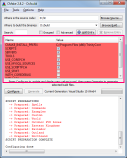
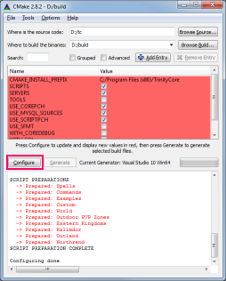
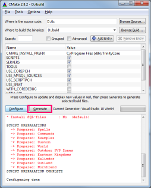

Pulling, Compiling and Keeping the Source Up-to-Date
Introduction
Before you get scared by this long guide, we assure you the procedure is quite simple. Most of the following steps are to be performed only the first time you install Trinity and only the Trinity updating procedures will need to be run from time to time.
Required Software
Pulling & Compiling the Source
Pulling the Source
- Create a directory in which Core files will be pulled (for example: C:\Trinity).
- Right-click on the directory and click on Git Extensions -> Clone.
- Fill in the data as follows:
Repository to clone: https://github.com/TrinityCore/TrinityCore
Destination: C:\Trinity
Subdirectory to create: <none>
Branch: 3.3.5
Personal Repository: Yes
Note: Depending on which branch you want to compile, change the name of the branch accordingly. i.e. 3.3.5/4.3.4/6.x
Click Clone. Within a few minutes all of the TrinityCore source files will be pulled into the directory C:\Trinity.
Configuring and generating Visual C++ solutions with CMake
Before you begin, create an empty directory called Build. In this example, we will use D:\Build.
Note: If CMake do not recognize C/C++ compiler, choose Specific Native Compiler, and choose path to target vcvarsall.bat, e.g. C:\Program Files\Microsoft Visual Studio 12.0\VC\vcvarsall.bat
|
2. Click Browse Build... -> Select |
3. Click Configure |
4. Make sure Use default native |
5. In the drop-down menu, choose the |
6. Click Finish. |
 7. Make sure Tools is checked. This will |  8. Click Configure again. |  9. Click Generate. This will install the |


Note: If MySQL is not found by CMake it is required to set MYSQL_INCLUDE_DIR = C:/mysql_libs/include and MYSQL_LIBRARY= C:/lib_XX/libmysql.lib.
XX depends if you are compiling in 32 or 64 bits mode. (See the 9th point of the Windows requirement list in TrinityCore Requirements.)
Note 2: If you get linker errors (e.g "error LNK2019: unresolved external symbol mysql_server_init"), make sure MYSQL_LIBRARY is set to the version that matches your compile mode (x64 vs 32 bits).
(If you do not see the MYSQL fields in CMake, tick the Advanced box).
Compiling the Source
- Browse into your D:\Build folder and open TrinityCore.sln with Visual C++ Express.
- On the menu at the top, click Build and select Configuration Manager.
- Set Active Solution Configuration to Release
- In the list menus below "Help", set Active Solution Platform to Win32 (if you set 64-bit compilation during the CMake configuration, select Win64)
click Close (settings get saved instantly). - Right-click ALL_BUILD in the Solution Explorer on the left sidebar and select Clean.
(on some VS2013 versions, click the Build menu and select Clean Solution.) - Right-click ALL_BUILD and select Build.
- Compilation length differs from machine to machine, you should expect it to take 5-30 minutes.
- If you are asked to "Reload build files" during the compile, do so.
- When the build is complete, you will find a message similar to the one below (the numbers may be different).
You will find your freshly compiled binaries in the C:\Build\bin\release folder. These are all used to run your server at the end of this instruction.
You will need the following files in order for the core to function properly. These will all be located in your C:\Build\bin\release folder:
libeay32.dll
libmySQL.dll
ssleay32.dll
worldserver.conf.dist
worldserver.exe
authserver.conf.dist
authserver.exe
There are a few DLLs that needs to be manually added to this folder, and you need to copy them over from the following installation/bin directories:
libmySQL.dll - C:\Program Files\MySQL\MySQL Server 5.x\lib
libeay32.dll, ssleay32.dll - C:\OpenSSL-Win32\bin
libzmq-v120-mt-4_0_4.dll - C:\Program Files\ZeroMQ 4.0.4\bin
Keeping the Source Up-to-Date
TrinityCore Developers are always at work fixing and adding new features to the core. You can always check them here, or by viewing them from within Git Extensions.
- Open your TrinityCore repository in GitExtensions.
- Click on the blue arrow
- In the new window, click Pull.
- This will sync your local repo to the latest commits from the branch you have setup as default.
- Now you will need to re-run CMake Configure & Generate to update your SLN files.
- Compile
- ??
- Profit!!
Next - Configuring your databases
Attachments:
{kind=link}
{kind=link}
{kind=link}
{kind=link}
{kind=link}
{kind=link}
{kind=link}
{kind=link}
Comments:
|
Database Installation seems to be broken. I'm not able to edit anything to correct it. King Pin? |
|
Updated with temporary guide. |
|
Andddddd it's fixed. Thanks KP |
|
Do method work apply for Windows 8.1 or do i need to download the latest version to compile the server?
|
|
Not sure what you said but basically it's the same procedure on Windows 8.1. |
|
Do i need to install Microsoft Visual Studio Express 2013 for Windows Desktop to compile trinitycore fpr windows 8.1 or is it possible to use older version of visual studio express? |
|
Yes, 2013 is required. |
|
So its not possible for me to compile using visual studio 2012 or previous versions |
|
I am having trouble "Pulling the source" when I follow the directions above I get the following error from Git Extensions : "C:\Program Files\Git\bin\git.exe" clone -v --recurse-submodules --progress --branch master "https://github.com/TrinityCore/TrinityCore.git" "C:/Trinity" Cloning into 'C:/Trinity'... fatal: Remote branch master not found in upstream origin Unexpected end of command stream Done
Can anyone help, I am trying to do a 3.3.5 build.
Thanks |
|
Instead of "--branch master" you need to do "--branch 3.3.5". |
|
Thank you for the fast response........ this seems to be working now |
|
10/25 - Updated to reflect branch changes (3.3.5/4.3.4/6.x) |
|
Getting 106 Errors concerning MySQL during the BUILD process. Haven't had any errors during previous steps. The errors are mostly LNK2019 for both worldserver and authserver. Error 48 error LNK2019: unresolved external symbol _mysql_server_init@12 referenced in function "public: static void __cdecl MySQL::Library_Init(void)" (?Library_Init@MySQL@@SAXXZ) D:\Build\src\server\worldserver\Main.obj worldserver
Also a MSB3073: Error 106 error MSB3073: The command "setlocal Not sure how to resolve these, so would appreciate some inputs |
|
Quoting from this exact page:
|
|
wow. Thanks for the quick reply. I'm not exactly sure where I do that. I have x86-versions installed of everything. |
|
In the cmake GUI, tick Advanced and then change MYSQL_LIBRARY to the correct value. This page and TrinityCore Requirements has all the info you need. |
|
Seems cmake linked up an old MS MySQL x64 version. Now the LNK-errors are fixed, still have the MSB3073 error. "C:\Program Files (x86)\CMake\bin\cmake.exe" -DBUILD_TYPE=Release -P cmake_install.cmake Thanks alot for the help Edit: Saw this was for the "INSTALL" project in Visual Studio.. At the configuration manager, the INSTALL project is by default unchecked. Does that mean I should exclude it from the build? Saw on the screen shots here, that there were no skipped projects, hence I included that one as well. |
|
No, you do not have to enable it. (That is why I want to remove screenshots from the wiki and switch to console based guide, people get too focused on them. |